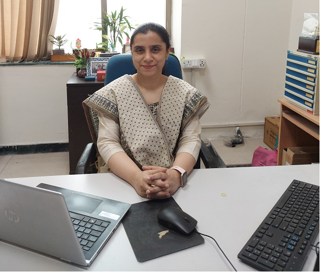

We design evolutionary and swarm-based algorithms — differential evolution, particle swarm, artificial bee colony — and apply them to optimization, decision-making, healthcare and industry problems, under the direction of Prof. Millie Pant.
AI, Machine Learning, Deep learning, Differential evolution, genetic algorithms and their hybrids for global optimization — mutation strategies, adaptive parameters and convergence behaviour.
Particle swarm and artificial bee colony optimization, applied to engineering design, image processing and watermarking.
Multi-criteria decision making and data envelopment analysis for supplier selection, education and industry benchmarking.
Machine learning and explainable AI for medical imaging, mental health assessment and clinical decision support.

Prof. Pant leads the Soft Computing Lab, working on AI, Machine Learning, Deep learning, numerical optimization, evolutionary algorithms and swarm intelligence techniques. Her research spans theory and application — from differential evolution and particle swarm optimization to their use in healthcare, supply chains and decision-making.
Several 2026 papers now published, including work in Applied Soft Computing and Information Sciences.
We welcome enquiries from motivated students interested in optimization, evolutionary computation and AI.
The lab continues to co-organize the Soft Computing for Problem Solving (SocProS) conference series.